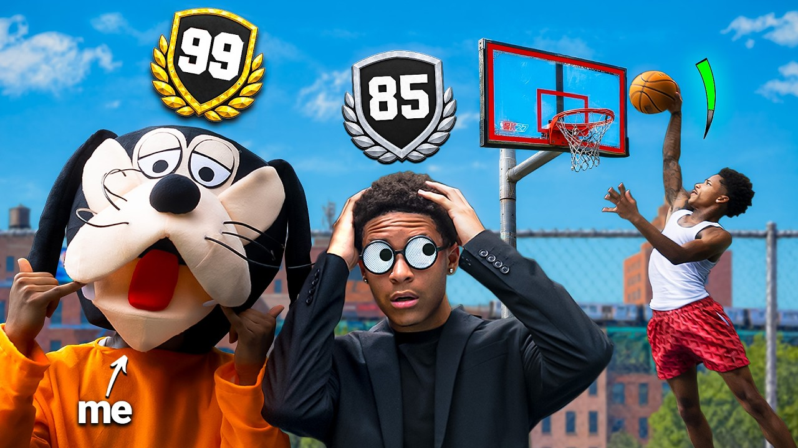
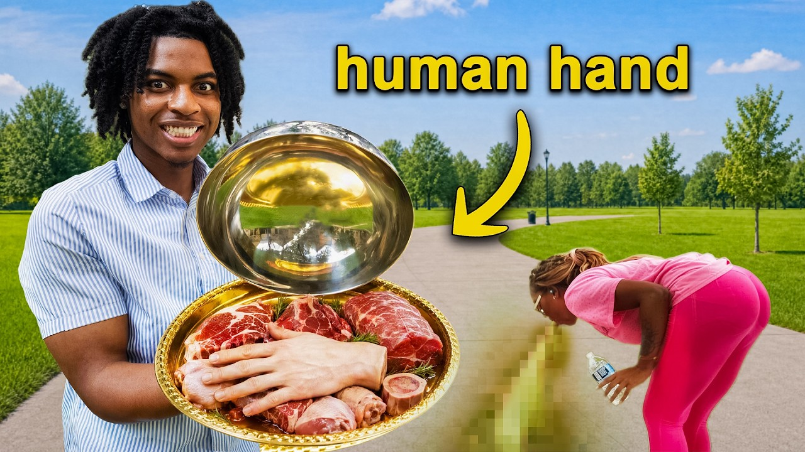
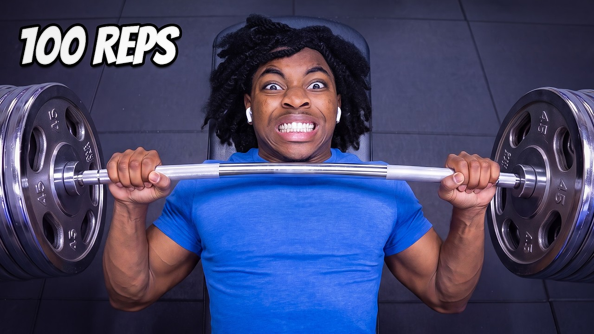
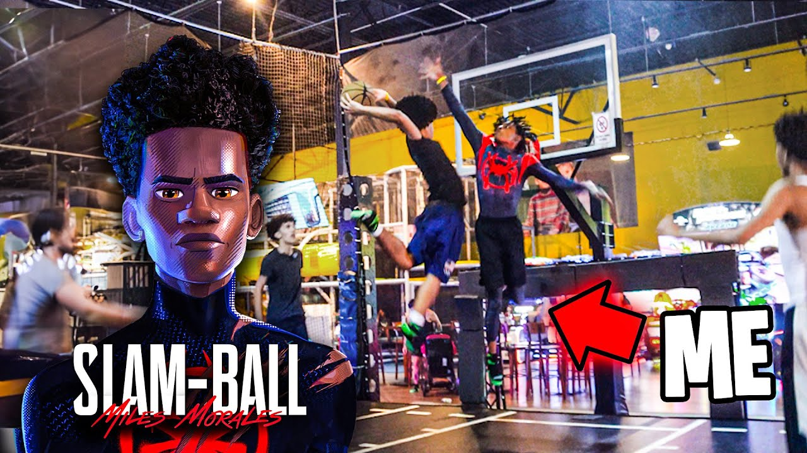
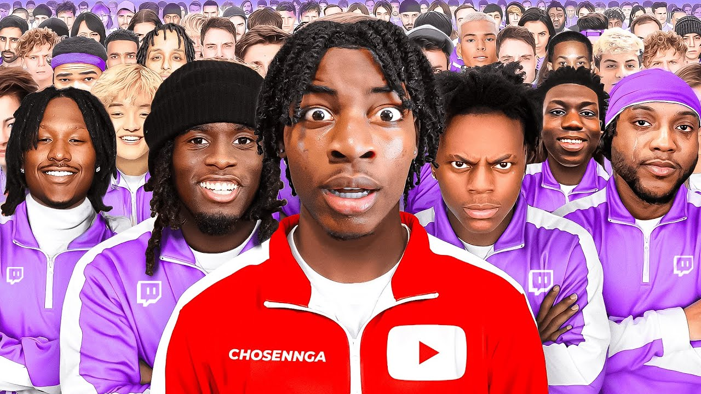

Welcome
Welcome to my website! My name is Bryce Butterfield and I create videos for my YouTube channel ChosenNGA. I enjoy making entertainment videos that can make someone's day better. My interests include video editing and coming up with ideas for new content. I use Adobe Premiere Pro to edit videos and OBS Studio to record content. Working on my channel gives me a reason to keep practicing and trying different ideas. I am also studying web design and learning how to build pages with HTML. My goal is to improve my editing and design skills while building a website that shows my work.
Skills
These are skills I practice through my videos and skills I am developing in class.
- Video editing
- Content planning
- Visual storytelling
- Video recording
- Audio recording
- Thumbnail composition
- Creative problem solving
- File organization
- Basic HTML markup — learning
- Web page structure — learning
What I Want to Learn Next
- Practice writing HTML by completing class projects.
- Learn more CSS to improve page colors and layouts.
- Improve accessibility by using clear headings and useful image descriptions.
Software and Hardware
- Adobe Premiere Pro
- Adobe Media Encoder
- OBS Studio
- Sony ZV-E10 camera
- Windows PC
Social Media and Web
Work Samples
Featured work: These five thumbnails represent videos from my YouTube channel.




